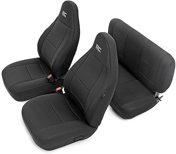

May 2026
We started covering scramblerseatcovers because the "top 10" lists online clearly hadn't tested anything. Our take is grounded in actual experience.
Panic buying on sale days — Prime Day and Black Friday scramblerseatcovers deals aren't always real discounts. Check year-round pricing.
Overbuying features — Most people use 20% of high-end scramblerseatcovers features. Don't pay for what you'll never touch.
Going with the cheapest option — Budget scramblerseatcovers cut corners. Spending 20% more often gets something that lasts 3x longer.
Blind brand loyalty — Your favorite brand might not make the best scramblerseatcovers. Stay open to better options.
→ #5 — Car Seat Covers 2 Pcs Front Premium Nappa Leather Easy to Clean Automotive — Fan favorite

→ #1 — Diver Down Neoprene Seat Cover Set Fits Jeep JL 4-Door 2018-2025 Custom Fit — Editor's pick

→ #4 — Diver Down Neoprene Seat Cover Set Fits Jeep JL 2-Door 2018-2022 Wrangler — Great value
→ #2 — Diver Down Neoprene Seat Cover Set Fits Jeep JL 4-Door 2018-2025 Custom Fit — Fan favorite
→ #3 — CAR PASS Universal FIT Piping Leather Two Front Seat Covers Waterproof — Top rated
Our comparison tables on scramblerseatcovers.com break down options by price, features, and ratings. Start there.